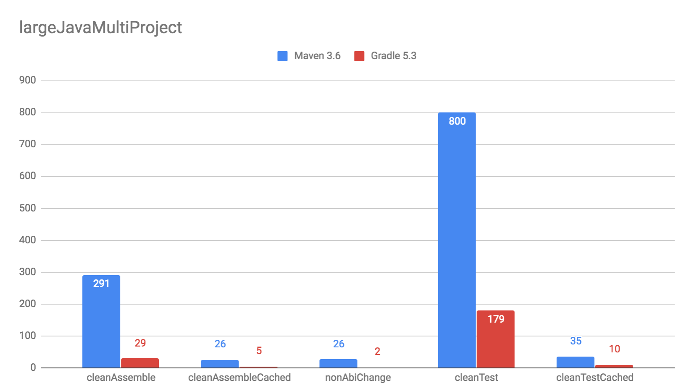

speaker {
name 'Stefan Wolf'
company 'Gradle Inc'
title 'Senior Software Engineer'
past [
'TNG Technology Consulting',
'Jenkins Committer'
],
twitter '@wolfs42'
github 'wolfs'
}Schnelle und zuverlässige Builds mit Maven und Gradle
Stefan Wolf (@wolfs42), Gradle
Wer bin ich
Gradle Inc.
Build Happiness
Produkte
Gradle Build Tool
Gradle Enterprise
Build und Entwicklerproduktivität
20% Buildfehlschläge
Fixen 5-10% Teamzeit
Langsam
Pro Minute 4% Teamzeit
Unzuverlässig: 5% Teamzeit
Schnelle Builds
Schnelle Builds
Schneller = weniger machen
Ergebnisse wiederverwenden!
Inkrementeller Build
Build Cache
Inkrementeller Build
Gradle :)
Maven :(
Inkrementeller Build
Gradle kann Ergebnisse
des letzten Mals
als dieser Build
auf diesem Computer
ausgeführt wurde wiederverwenden.

das geht noch besser
Wieso nicht…
von irgendwann
wenn irgendein Build
irgendwo ausgeführt wurde.

Noch besser
Maven und Gradle

Gradle
$> gradle --build-cache assemble
:compileJava FROM-CACHE
:processResources
:classes
:jar
:assemble
BUILD SUCCESSFULGradle
Stabil für Java, Groovy, Scala, C++ und Swift Projekte
Kompilieren, Testen und Codeanalyse
Performantes Backend von Gradle
Dockerhub: gradle/build-cache-node
Maven
Eigene Extension
Release: Anfang März mit Gradle Enterprise 2019.1
compile/test-compile und surefire/failsafe plugins
Zuverlässige Builds
Anforderungen
Daten um Verbesserungen/Verschlechterungen festzustellen
Entwickler- und CI-Builds
Zuverlässigkeit
Geschwindigkeit
Was sind Build Scans?
Aufzeichnung was in einem Build passiert ist
Permanente und teilbare URLs
Für Entwickler und Build Master
Build Scans - Demo
Build Scans - Anforderungen
Maven/Gradle
Auf scans.gradle.com öffentlich/gratis
Ohne Build Comparison
Eigene Gradle Enterprise Instanz
Gradle
$> gradle build --scan
...
BUILD SUCCESSFUL in 8m 22s
418 actionable tasks: 112 executed, 48 from cache, 258 up-to-date
Publishing build scan...
https://scans.gradle.com/s/lbmn7n4dngqgqMaven
Extension in
.mvn
$> mvn package
...
[INFO] ------------------------------------------------------------------------
[INFO] BUILD SUCCESS
[INFO] ------------------------------------------------------------------------
[INFO] Total time: 26.507 s
[INFO] Finished at: 2019-02-13T18:45:26+01:00
[INFO] ------------------------------------------------------------------------
[INFO]
[INFO] Publishing build scan...
[INFO] https://scans.gradle.com/s/4r5fubfnzjo54
[INFO]Performance Dashboard
Beispiel: Performance Regression
Cache Misses
Eigene Tags für unerwartete Cache Misses
Beispiel: Gradle Build
Eigene Analysen
Export API benutzen!


Vielen Dank!
Slides: https://wolfs.github.io/talk-developer-productivity-day-2019
Build Cache Deep Dive
Maven + Gradle Enterprise
Gradle Enterprise: https://gradle.com